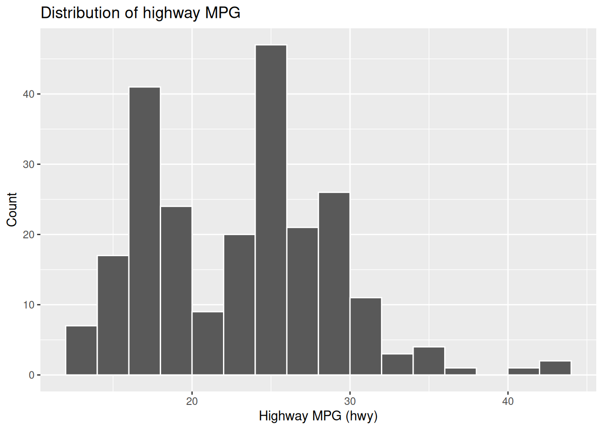

Code
if (!requireNamespace("tidyverse", quietly = TRUE)) {
install.packages("tidyverse", repos = "https://cloud.r-project.org")
}
library(tidyverse)STAT 109: Introductory Biostatistics
Open in Colab — after it opens, use Runtime -> Change runtime type and select R if needed.
This lab introduces tidyverse workflows for describing one variable at a time, then using filter() and group_by() for focused summaries.
By the end of this lab, you should be able to:
filter() to subset data with conditions.group_by() with summarise() to compare groups.| Function | What it does |
|---|---|
library(tidyverse) |
Loads the core tidyverse packages |
glimpse(df) |
Quick view of variable names and types |
class(x) |
Reports object type |
levels(x) |
Shows categories if x is a factor |
mutate() |
Adds/changes variables |
factor() |
Converts a variable to categorical type |
summarise() |
Computes summary statistics |
n() |
Counts rows inside summarise() |
filter() |
Keeps rows that satisfy conditions |
group_by() |
Creates groups before summaries |
ggplot() + geom_histogram() |
Makes a histogram for numerical data |
count() |
Quick count by category |
if (!requireNamespace("tidyverse", quietly = TRUE)) {
install.packages("tidyverse", repos = "https://cloud.r-project.org")
}
library(tidyverse)We’ll use the built-in mpg dataset from ggplot2 (loaded with tidyverse). Each row is a car model with variables like city MPG (cty), highway MPG (hwy), drive type (drv), and class (class).
data("mpg", package = "ggplot2")
glimpse(mpg)Rows: 234
Columns: 11
$ manufacturer <chr> "audi", "audi", "audi", "audi", "audi", "audi", "audi", "…
$ model <chr> "a4", "a4", "a4", "a4", "a4", "a4", "a4", "a4 quattro", "…
$ displ <dbl> 1.8, 1.8, 2.0, 2.0, 2.8, 2.8, 3.1, 1.8, 1.8, 2.0, 2.0, 2.…
$ year <int> 1999, 1999, 2008, 2008, 1999, 1999, 2008, 1999, 1999, 200…
$ cyl <int> 4, 4, 4, 4, 6, 6, 6, 4, 4, 4, 4, 6, 6, 6, 6, 6, 6, 8, 8, …
$ trans <chr> "auto(l5)", "manual(m5)", "manual(m6)", "auto(av)", "auto…
$ drv <chr> "f", "f", "f", "f", "f", "f", "f", "4", "4", "4", "4", "4…
$ cty <int> 18, 21, 20, 21, 16, 18, 18, 18, 16, 20, 19, 15, 17, 17, 1…
$ hwy <int> 29, 29, 31, 30, 26, 26, 27, 26, 25, 28, 27, 25, 25, 25, 2…
$ fl <chr> "p", "p", "p", "p", "p", "p", "p", "p", "p", "p", "p", "p…
$ class <chr> "compact", "compact", "compact", "compact", "compact", "c…Let’s describe hwy (highway MPG), a numerical variable.
class(mpg$hwy)[1] "integer"mpg %>%
summarise(
mean_hwy = mean(hwy),
sd_hwy = sd(hwy)
)# A tibble: 1 × 2
mean_hwy sd_hwy
<dbl> <dbl>
1 23.4 5.95ggplot(mpg, aes(x = hwy)) +
geom_histogram(binwidth = 2, boundary = 0, color = "white") +
labs(
title = "Distribution of highway MPG",
x = "Highway MPG (hwy)",
y = "Count"
)
Now describe drv (drive type), a categorical variable.
class(mpg$drv)[1] "character"levels(mpg$drv)NULLmpg %>%
count(drv, name = "count") %>%
mutate(proportion = count / sum(count))# A tibble: 3 × 3
drv count proportion
<chr> <int> <dbl>
1 4 103 0.440
2 f 106 0.453
3 r 25 0.107In mpg, cyl (number of cylinders) is numeric, but in many analyses we treat it as categories (4, 5, 6, 8) rather than a continuous scale.
class(mpg$cyl)[1] "integer"Convert cyl to a factor:
mpg2 <- mpg %>%
mutate(cyl = factor(cyl))
class(mpg2$cyl)[1] "factor"levels(mpg2$cyl)[1] "4" "5" "6" "8"Now compute count and proportion for cyl categories:
mpg2 %>%
count(cyl, name = "count") %>%
mutate(proportion = count / sum(count))# A tibble: 4 × 3
cyl count proportion
<fct> <int> <dbl>
1 4 81 0.346
2 5 4 0.0171
3 6 79 0.338
4 8 70 0.299 filter() with conditionsUse filter() to keep only rows meeting conditions.
Examples:
# Cars with highway MPG at least 30
mpg %>%
filter(hwy >= 30) %>%
select(manufacturer, model, hwy) %>%
head()# A tibble: 6 × 3
manufacturer model hwy
<chr> <chr> <int>
1 audi a4 31
2 audi a4 30
3 chevrolet malibu 30
4 honda civic 33
5 honda civic 32
6 honda civic 32# SUVs only
mpg %>%
filter(class == "suv") %>%
select(manufacturer, model, class, hwy) %>%
head()# A tibble: 6 × 4
manufacturer model class hwy
<chr> <chr> <chr> <int>
1 chevrolet c1500 suburban 2wd suv 20
2 chevrolet c1500 suburban 2wd suv 15
3 chevrolet c1500 suburban 2wd suv 20
4 chevrolet c1500 suburban 2wd suv 17
5 chevrolet c1500 suburban 2wd suv 17
6 chevrolet k1500 tahoe 4wd suv 19# SUVs with 4-wheel drive
mpg %>%
filter(class == "suv", drv == "4") %>%
select(manufacturer, model, class, drv, hwy) %>%
head()# A tibble: 6 × 5
manufacturer model class drv hwy
<chr> <chr> <chr> <chr> <int>
1 chevrolet k1500 tahoe 4wd suv 4 19
2 chevrolet k1500 tahoe 4wd suv 4 14
3 chevrolet k1500 tahoe 4wd suv 4 15
4 chevrolet k1500 tahoe 4wd suv 4 17
5 dodge durango 4wd suv 4 17
6 dodge durango 4wd suv 4 17group_by() + summarise()Now summarize a numerical variable by groups.
mpg %>%
group_by(drv) %>%
summarise(
n = n(),
mean_hwy = mean(hwy),
sd_hwy = sd(hwy)
)# A tibble: 3 × 4
drv n mean_hwy sd_hwy
<chr> <int> <dbl> <dbl>
1 4 103 19.2 4.08
2 f 106 28.2 4.21
3 r 25 21 3.66mpg %>%
group_by(class) %>%
summarise(
n = n(),
mean_hwy = mean(hwy),
sd_hwy = sd(hwy)
) %>%
arrange(desc(mean_hwy))# A tibble: 7 × 4
class n mean_hwy sd_hwy
<chr> <int> <dbl> <dbl>
1 compact 47 28.3 3.78
2 subcompact 35 28.1 5.38
3 midsize 41 27.3 2.14
4 2seater 5 24.8 1.30
5 minivan 11 22.4 2.06
6 suv 62 18.1 2.98
7 pickup 33 16.9 2.27Use mpg to complete the following:
cty, hwy, or displ) and report mean + SD.drv, class, or manufacturer) and report count + proportion.filter() to keep rows with hwy >= 28 and drv == "f". Show first 10 rows of manufacturer, model, hwy, and drv.group_by(class) and report mean cty by class.cyl) and list its levels.Today you practiced a tidyverse workflow for one-variable description:
filter() and group_by() for focused comparisons.These steps will be reused throughout project work and upcoming labs.